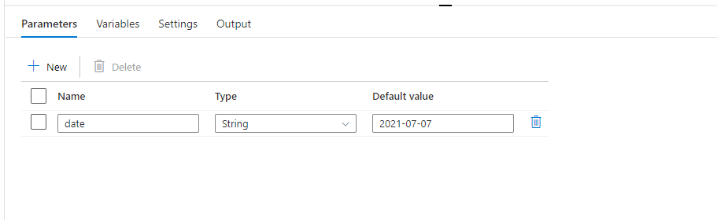
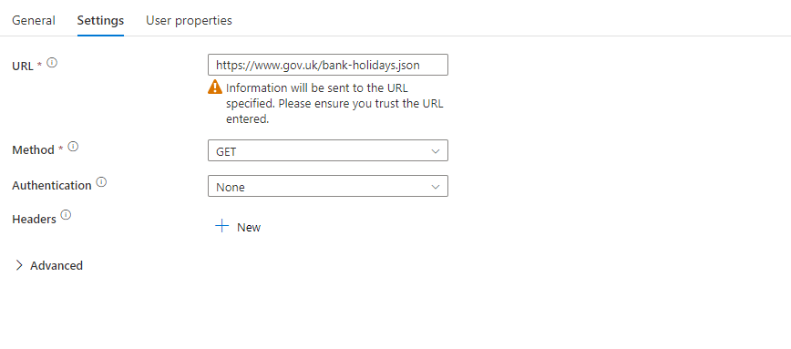
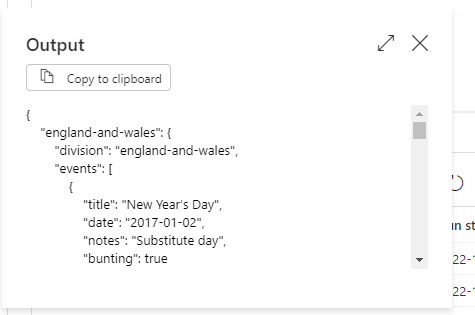
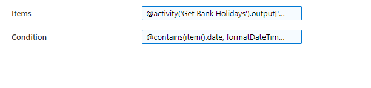
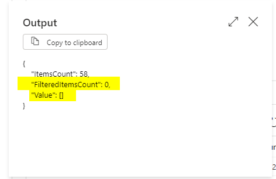
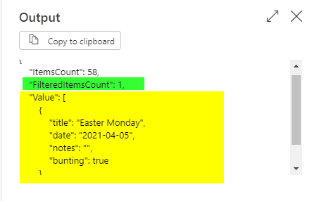
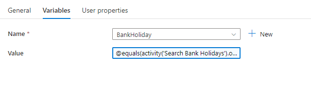

Introduction
Sometimes you have processes that you don’t need to run in certain scenarios. The past year I’ve been working with market trading data. Trading in exchanges happens every weekday but they don’t happen on weekends or national holidays as they’re usually closed.
This posses a problem to usual ADF trigger patterns where you can schedule quite complex triggerscenarios such as the 1st Sunday of every month. However, no concept of national holidays exist, so we need to handle this after the trigger point.
Problem
So lets restate the problem within the context of ADF. We need to trigger our process everyday, then we must validate whether this date is a UK Bank Holiday and run the business logic.
Solution
Government API
The UK government have started to build a useful catalog of APIs for consumption, one of which contains all public holidays. The api returns the following json data.
curl 'https://www.gov.uk/bank-holidays.json'The schema can be broken down into having two key pieces of information:
- The applicable country with the values england-and-wales, scotland & northern-ireland at the root level.
- An array of Events that contains several properties such as Title (the Holiday’s Name) and Date
ADF Pipeline
So our goal is to select the appropriate region for our data and then to filter the dates to validate our input date doesn’t match any of the ones listed in the above API.
Our final pipeline will look like this consisting of 3 activities and parameterised so it can be reused as a child pipeline in wider orchestration flows. The code for this is re-produced at the bottom.
First we need to setup our pipeline with the parameters and variables.
We need to configure a parameter to accept a date input which could be from a parent process or trigger. We have called this date
Next we need a variable called BankHoliday to store the outcome of the question Is It a Bank Holiday for this date?

A web activity which calls the https://www.gov.uk/bank-holidays.jsonendpoint. It is configured like so 
The output of this should look like
The Filter Activity allows use to iterate through that events array and find matching items.

We must first define our items. I’ve manually selected the england-and-wales events but this could easily be made to be dynamic and extended to other regions on demand. The ADF expression for Items is
{.adf expression .adf} @activity('Get Bank Holidays').output['england-and-wales']['events']The conditions we will use to filter these selected items is
{.adf expression .adf} @contains(item().date, formatDateTime(pipeline().parameters.date,'yyyy-MM-dd'))We check that the item contains the parameter date. We reformat the input date to ensure there are no inconsistencies in the comparison. e.g. yyyy-mm-DD != mm-yyyy-dd
Which outputs the following structure:
ItemsCount - The Number of items we searched to try and find a match
FilteredItemsCount - The Number of Matches we found for said date
Value - An Array of Matches for Said Date
An example of our code when we don’t find a match using the date of 2021-07-07.

An example of a successful match using the date of 2021-04-05 which is Easter Monday in the UK!

You will notice that FilteredItemsCount has incremented which is the property we will use in the next activity.
So now we have found our matches or not, now we need to set our variable to answer the question! We will use a set variable activity. Our logic should be pretty simple, does the FilteredItemCount = 1

The ADF expression looks like
{.adf expression .adf} @equals(activity('Search Bank Holidays').output.FilteredItemsCount,1)Conclusion
Now you have a Azure Data Factory pipeline that can calculate whether a given day is a United Kingdom Bank Holiday Or Regional Bank Holiday (Wales, Scotland or Northern Ireland).